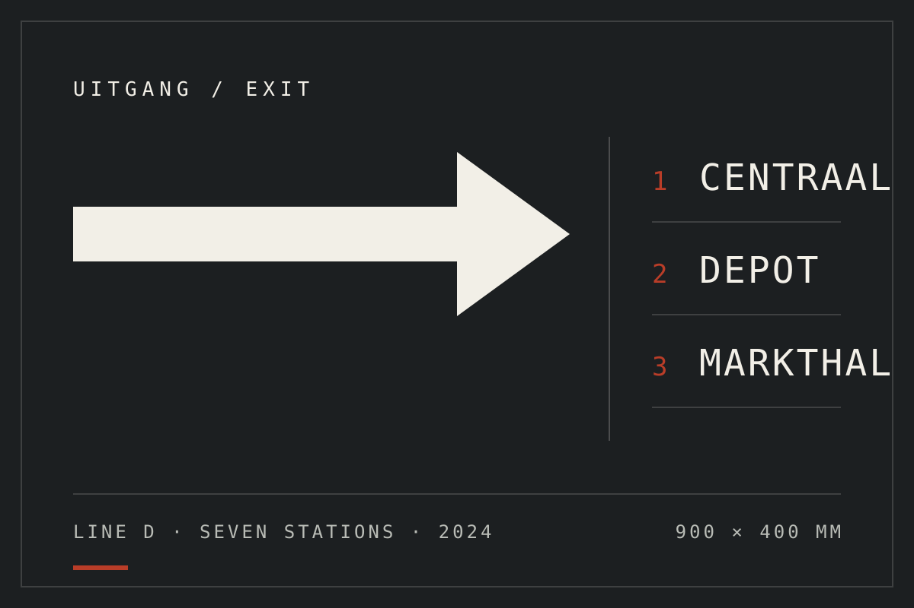

Environmental graphic design . Rotterdam
Mira Halvorsen
Most people meet my work at the worst moment fo their day: standing still, late, in a building they have never been in.
I have drawn signs since 2014 — for a metro line, a children's hospital, a coastal trail and city library. th work is mostly typography, arrows and numbering, tested on foot with a stopwatch.
2021-2024
Fixture study for Lind D, 2024. 900 × 400 mm enamel on steel, read at four metres.
Selected Work
Four systems drawn between 2021 and 2024. Each one had to survive weather, cleaning crews and people walking past it at speed.
-
Fig. o1
Line D, Seven Stations
Seven new platforms under the Maas, one naming logic. Every decision had to read from four metres while walking and from twenty while lost. Station names share a single 40 mm baseline grid with the platform numerals.
-
Fig. o2
Sint-Lucas children's Wing
A 240-bed wing where the readers are six years old and nervous. Pictograms were tested with 38 children; room numbers sit at 1.2 m so a parent can read them while holding a hand.
-
Fig. 03
Dune Route Markers
Eleven kilometres of trail across shifting sand. Enamel markers on hardwood posts, numbered by hectometre so walkers and emergency services use the same language.
-
Fig. 04
Bibliotheek aan de Maas
Shelf signage for 180,000 volumes in eleven languages. The classification runs on a two-letter code a visitor can hold in their head between the entrance and the fourth floor.

How the work gets made
Three habits that decide whether a sign works. Not a methodology deck - what actually happens on site, in order.
-
01
Read the room
Two days on site before drawing anything: where people stop, where they hesitate, where they give up and ask staff. Most wayfinding problems are decision problems placed in the wrong spot.
Deliverable . Decision audit, tow days on site
-
02
Write less
A sign carrying four messages carries none. Names are cut until a stranger can repeat the destination from memory. Where a word can become an arrow, the arrow wins.
Deliverable · Naming and message schedule, one to two weeks
-
03
Test it walking
Every system is walked at normal speed, then at the speed of someone late. Anything unreadable on the second pass is redrawn — not explained in a manual.
Deliverable · Walk-through test, three rounds
The Practice
Mira Halvorsen is an environmental graphic designer working between Rotterdam and Antwerp. After six years in a signage fabricator’s drawing office, she opened a studio in 2016 to work closer to the buildings themselves.
Projects usually begin with an architect’s plan and end with a maintenance schedule: type chosen for the cutting plot, colours matched to RAL references, and a document that tells a technician in 2031 how to replace a single panel.
What I take on
- Sign systems and naming logic
- Pictogram families, drawn and user-tested
- Accessible wayfinding: contrast, reading distance, tactile plates
- Typographic audits of buildings already in use
- Fabrication drawings and RAL colour matching
- Maintenance and replacement schedules
- Based
- Rotterdam, NL — studio since 2016
- Working since
- 2014, after six years in fabrication
- Languages
- Dutch, English, German
- Availability
- Commissions from March 2027
Start with a walk-though
Most projects begin with a site visit and a two-hour conversation about who gets lost, and where. Write a few lines about the building; you will get a reply within three working days.
3032 AD Rotterdam
The Netherlands
Studio hours: Monday to Thursday, 09:00—17:30 CET. The studio takes four projects a year, so early conversations are welcome.